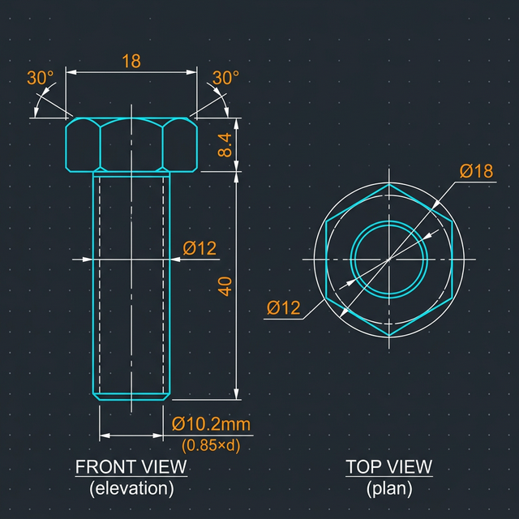
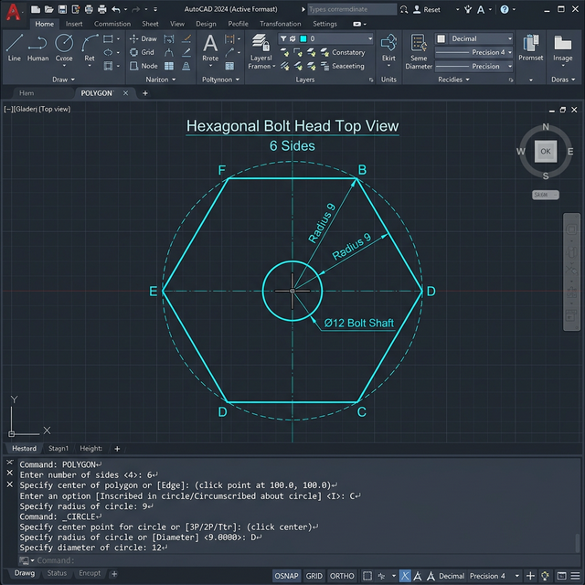
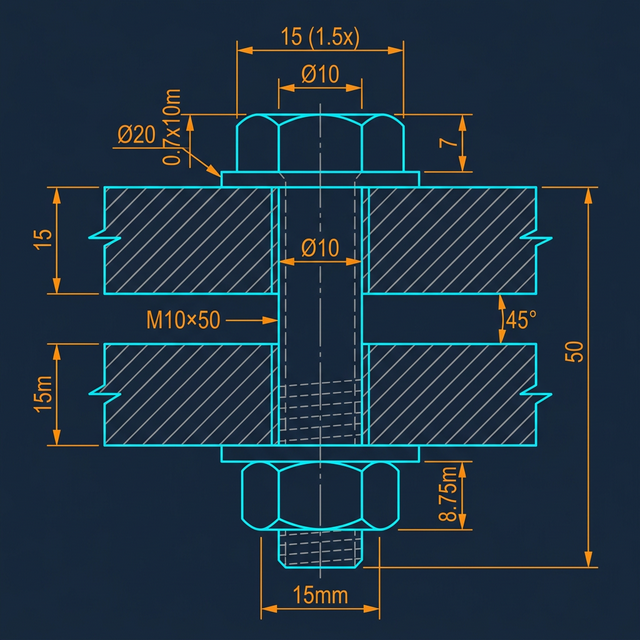
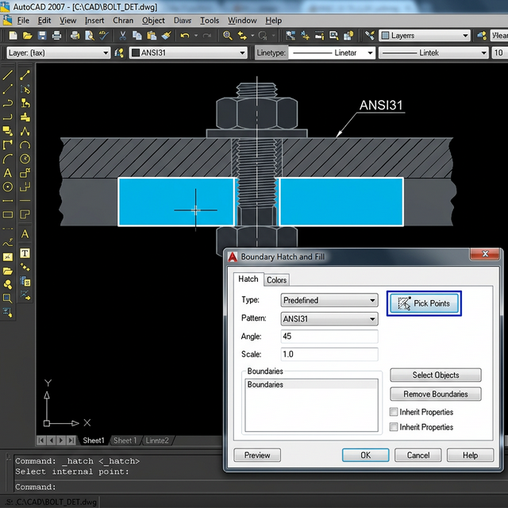
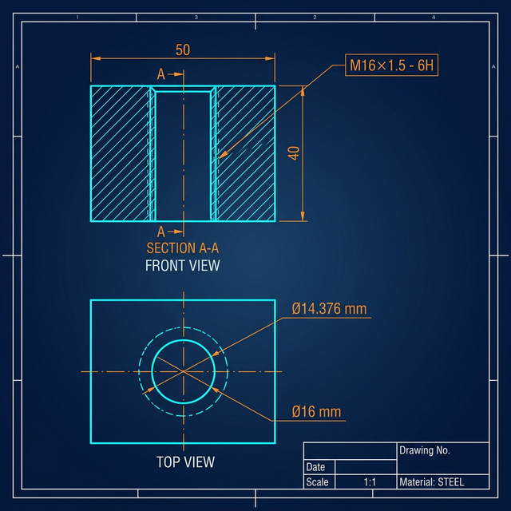
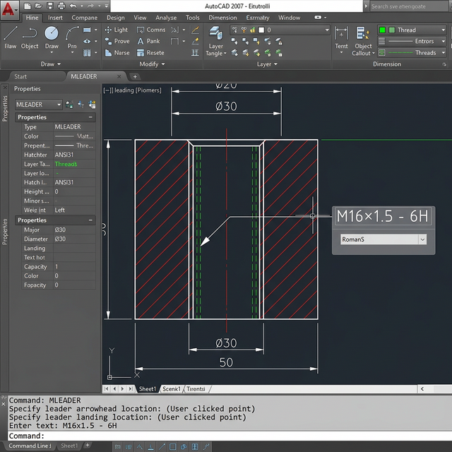

📖 ONE POINT LESSON
🔩 Mức Độ 14
Vẽ Biểu Diễn Ren và Bulong
Hướng dẫn chi tiết: Vẽ bulong M12×40 lục giác → Ghép 2 tấm bằng bulong M10×50 + đai ốc + vòng đệm → Vẽ lỗ ren trong M16×1.5 + MLEADER callout.
📐
Quy ước kích thước bulong theo tiêu chuẩn
Với bulong lục giác chuẩn: Đầu bulong rộng =
1.5 × d, cao = 0.7 × d. Đai ốc rộng = 1.5 × d, cao = 0.875 × d. Đường kính ren trong (minor) ≈ d − 1.3 × bước. Trong biểu diễn đơn giản: nét liền = đường kính ngoài, nét đứt = đường kính trong.
🔩 BT14.1 — Bulong M12×40 Lục Giác
Vẽ mặt đứng (Front View) + mặt bằng (Top View). Đường kính đầu = 1.5d = 18mm, cao đầu = 0.7d = 8.4mm.
Thông số tính toán
| Thông số | Công thức | Giá trị |
|---|---|---|
| Đường kính ren (d) | — | 12 mm |
| Chiều dài bulong (l) | — | 40 mm |
| Bề rộng đầu (S) | 1.5 × d | 18 mm |
| Chiều cao đầu (k) | 0.7 × d | 8.4 mm |
| Đường kính ren trong | ≈ 0.85 × d | 10.2 mm |
| Bán kính ngoại tiếp lục giác | S / (2 × cos30°) | ≈ 10.4 mm |
Bước 1: Thiết lập bản vẽ và Layer
1 Thiết lập môi trường vẽ
── Tạo file mới, thiết lập đơn vị mm
Command: UNITS ↵ → Length Type: Decimal, Precision: 0.00
Command: LIMITS ↵ → 0,0 → 200,150 ↵
Command: Z ↵ → A ↵ (Zoom All)
── Tạo Layer
Command: LA ↵
Layer "Object" → Màu White (7) → Lineweight: 0.35mm
Layer "Center" → Màu Red (1) → Linetype: CENTER
Layer "Hidden" → Màu Magenta (6) → Linetype: HIDDEN
Layer "Dim" → Màu Cyan (4)
Command: UNITS ↵ → Length Type: Decimal, Precision: 0.00
Command: LIMITS ↵ → 0,0 → 200,150 ↵
Command: Z ↵ → A ↵ (Zoom All)
── Tạo Layer
Command: LA ↵
Layer "Object" → Màu White (7) → Lineweight: 0.35mm
Layer "Center" → Màu Red (1) → Linetype: CENTER
Layer "Hidden" → Màu Magenta (6) → Linetype: HIDDEN
Layer "Dim" → Màu Cyan (4)
Bước 2: Vẽ mặt đứng bulong (Front View)
2 Vẽ đầu bulong + thân bulong
── Chuyển Layer "Object"
── Vẽ đầu bulong (RECTANG 18×8.4)
Command: RECTANG ↵
First corner: 0,0 ↵
Other corner: 18,8.4 ↵
── Vẽ thân bulong (RECTANG 12×40, canh giữa)
Command: RECTANG ↵
First corner: 3,-40 ↵ (offset = (18-12)/2 = 3)
Other corner: 15,0 ↵
── Vẽ chamfer 30° trên đầu bulong
Command: L ↵ → 0,8.4 → 3,5.7 ↵ → ↵ (góc trái)
Command: L ↵ → 18,8.4 → 15,5.7 ↵ → ↵ (góc phải)
── Vẽ đường phân chia mũ (ARC cong nhẹ giữa đầu)
Command: ARC ↵
Start: 3,5.7 → Second: 9,4 → End: 15,5.7
── Vẽ đầu bulong (RECTANG 18×8.4)
Command: RECTANG ↵
First corner: 0,0 ↵
Other corner: 18,8.4 ↵
── Vẽ thân bulong (RECTANG 12×40, canh giữa)
Command: RECTANG ↵
First corner: 3,-40 ↵ (offset = (18-12)/2 = 3)
Other corner: 15,0 ↵
── Vẽ chamfer 30° trên đầu bulong
Command: L ↵ → 0,8.4 → 3,5.7 ↵ → ↵ (góc trái)
Command: L ↵ → 18,8.4 → 15,5.7 ↵ → ↵ (góc phải)
── Vẽ đường phân chia mũ (ARC cong nhẹ giữa đầu)
Command: ARC ↵
Start: 3,5.7 → Second: 9,4 → End: 15,5.7
Bước 3: Thêm biểu diễn ren (Simplified)
3 Vẽ đường ren đơn giản hóa trên thân bulong
── Chuyển Layer "Hidden" (nét đứt)
── Vẽ 2 đường nét đứt song song biểu diễn ren trong (d₁ ≈ 0.85d = 10.2mm)
Command: L ↵
From: 3.9,-40 ↵ → 3.9,0 ↵ → ↵ (nét đứt trái, offset = (18-10.2)/2 = 3.9)
Command: L ↵
From: 14.1,-40 ↵ → 14.1,0 ↵ → ↵ (nét đứt phải)
── Chuyển Layer "Center" (nét tâm)
Command: L ↵
From: 9,-43 ↵ → 9,11 ↵ → ↵ (đường tâm dọc)
── Vẽ 2 đường nét đứt song song biểu diễn ren trong (d₁ ≈ 0.85d = 10.2mm)
Command: L ↵
From: 3.9,-40 ↵ → 3.9,0 ↵ → ↵ (nét đứt trái, offset = (18-10.2)/2 = 3.9)
Command: L ↵
From: 14.1,-40 ↵ → 14.1,0 ↵ → ↵ (nét đứt phải)
── Chuyển Layer "Center" (nét tâm)
Command: L ↵
From: 9,-43 ↵ → 9,11 ↵ → ↵ (đường tâm dọc)
Trong biểu diễn đơn giản (Simplified): đường kính ngoài (Major) vẽ nét liền, đường kính trong (Minor) vẽ nét đứt. Khoảng cách giữa 2 nét ≈ 15% đường kính.
Bước 4: Vẽ mặt bằng bulong (Top View)
4 Vẽ lục giác đầu bulong nhìn từ trên
── Chuyển Layer "Object"
── Vẽ lục giác đều ngoại tiếp (Circumscribed)
Command: POLYGON ↵
Enter number of sides: 6 ↵
Specify center of polygon: 50,30 ↵ (vị trí bên phải Front View)
Enter option [Inscribed/Circumscribed]: C ↵
Specify radius of circle: 9 ↵ (= S/2 = 18/2)
── Vẽ vòng tròn biểu diễn mũ vát (chamfer circle)
Command: C ↵ → Center: 50,30 → Radius: 10.4 (= S / 2cos30°)
── Vẽ vòng tròn thân bulong
Command: C ↵ → Center: 50,30 → Radius: 6 (= d/2 = 12/2)
── Chuyển Layer "Center" → vẽ 2 đường tâm
Command: L ↵ → 38,30 → 62,30 ↵ → ↵ (tâm ngang)
Command: L ↵ → 50,18 → 50,42 ↵ → ↵ (tâm dọc)
── Vẽ lục giác đều ngoại tiếp (Circumscribed)
Command: POLYGON ↵
Enter number of sides: 6 ↵
Specify center of polygon: 50,30 ↵ (vị trí bên phải Front View)
Enter option [Inscribed/Circumscribed]: C ↵
Specify radius of circle: 9 ↵ (= S/2 = 18/2)
── Vẽ vòng tròn biểu diễn mũ vát (chamfer circle)
Command: C ↵ → Center: 50,30 → Radius: 10.4 (= S / 2cos30°)
── Vẽ vòng tròn thân bulong
Command: C ↵ → Center: 50,30 → Radius: 6 (= d/2 = 12/2)
── Chuyển Layer "Center" → vẽ 2 đường tâm
Command: L ↵ → 38,30 → 62,30 ↵ → ↵ (tâm ngang)
Command: L ↵ → 50,18 → 50,42 ↵ → ↵ (tâm dọc)


Bước 5: Ghi kích thước
5 Ghi đầy đủ kích thước bulong
── Chuyển Layer "Dim"
Command: DIMLINEAR ↵ → ghi chiều rộng đầu: 18
Command: DIMLINEAR ↵ → ghi chiều cao đầu: 8.4
Command: DIMLINEAR ↵ → ghi chiều dài thân: 40
Command: DIMLINEAR ↵ → ghi đường kính thân: Ø12
── Ghi callout tên bulong
Command: MLD ↵ (MLEADER)
→ Chỉ vào bulong → ghi: M12×40
Command: DIMLINEAR ↵ → ghi chiều rộng đầu: 18
Command: DIMLINEAR ↵ → ghi chiều cao đầu: 8.4
Command: DIMLINEAR ↵ → ghi chiều dài thân: 40
Command: DIMLINEAR ↵ → ghi đường kính thân: Ø12
── Ghi callout tên bulong
Command: MLD ↵ (MLEADER)
→ Chỉ vào bulong → ghi: M12×40
🔗 BT14.2 — Ghép 2 Tấm bằng Bulong M10×50
Vẽ mặt cắt: 2 tấm ghép + bulong M10×50 + đai ốc + vòng đệm. Hatch mặt cắt tấm ghép bằng ANSI31.
Thông số lắp ghép
| Chi tiết | Kích thước | Ghi chú |
|---|---|---|
| Bulong | M10×50 | d = 10mm, l = 50mm |
| Đầu bulong | 15 × 7 mm | S = 1.5d = 15, k = 0.7d = 7 |
| Tấm ghép trên | 60 × 15 mm | Lỗ suốt Ø10.5 |
| Tấm ghép dưới | 60 × 15 mm | Lỗ suốt Ø10.5 |
| Vòng đệm | OD=20, ID=10.5, t=2 | Đệm phẳng (Plain washer) |
| Đai ốc | 15 × 8.75 mm | S = 1.5d, H = 0.875d |
Bước 1: Vẽ 2 tấm ghép (mặt cắt)
1 Vẽ 2 tấm thép chồng lên nhau
── Tấm trên (60×15, tâm lỗ tại x=30)
Command: RECTANG ↵ → 0,0 → 60,15 ↵
── Tấm dưới (60×15, ngay bên dưới tấm trên)
Command: RECTANG ↵ → 0,-15 → 60,0 ↵
── Vẽ lỗ suốt (2 đường dọc qua 2 tấm)
Command: L ↵ → 24.75,-15 → 24.75,15 ↵ → ↵ (trái lỗ, 30-10.5/2)
Command: L ↵ → 35.25,-15 → 35.25,15 ↵ → ↵ (phải lỗ, 30+10.5/2)
Command: RECTANG ↵ → 0,0 → 60,15 ↵
── Tấm dưới (60×15, ngay bên dưới tấm trên)
Command: RECTANG ↵ → 0,-15 → 60,0 ↵
── Vẽ lỗ suốt (2 đường dọc qua 2 tấm)
Command: L ↵ → 24.75,-15 → 24.75,15 ↵ → ↵ (trái lỗ, 30-10.5/2)
Command: L ↵ → 35.25,-15 → 35.25,15 ↵ → ↵ (phải lỗ, 30+10.5/2)
Bước 2: Vẽ bulong + vòng đệm + đai ốc
2 Vẽ các chi tiết kẹp chặt
── Đầu bulong (phía trên tấm trên)
Command: RECTANG ↵ → 22.5,17 → 37.5,24 ↵ (S=15, k=7, cách vòng đệm)
── Vòng đệm trên (giữa đầu bulong và tấm trên)
Command: RECTANG ↵ → 20,15 → 40,17 ↵ (OD=20mm, t=2mm)
── Thân bulong (nét liền xuyên qua lỗ)
Command: L ↵ → 25,24 → 25,-26 ↵ → ↵ (bên trái thân)
Command: L ↵ → 35,24 → 35,-26 ↵ → ↵ (bên phải thân)
── Vòng đệm dưới (giữa tấm dưới và đai ốc)
Command: RECTANG ↵ → 20,-17 → 40,-15 ↵
── Đai ốc (phía dưới vòng đệm dưới)
Command: RECTANG ↵ → 22.5,-25.75 → 37.5,-17 ↵ (S=15, H=8.75)
── Thêm chamfer 30° trên đầu bulong và đai ốc
Command: L ↵ → 22.5,24 → 25,22 ↵ → ↵
Command: L ↵ → 37.5,24 → 35,22 ↵ → ↵
Command: RECTANG ↵ → 22.5,17 → 37.5,24 ↵ (S=15, k=7, cách vòng đệm)
── Vòng đệm trên (giữa đầu bulong và tấm trên)
Command: RECTANG ↵ → 20,15 → 40,17 ↵ (OD=20mm, t=2mm)
── Thân bulong (nét liền xuyên qua lỗ)
Command: L ↵ → 25,24 → 25,-26 ↵ → ↵ (bên trái thân)
Command: L ↵ → 35,24 → 35,-26 ↵ → ↵ (bên phải thân)
── Vòng đệm dưới (giữa tấm dưới và đai ốc)
Command: RECTANG ↵ → 20,-17 → 40,-15 ↵
── Đai ốc (phía dưới vòng đệm dưới)
Command: RECTANG ↵ → 22.5,-25.75 → 37.5,-17 ↵ (S=15, H=8.75)
── Thêm chamfer 30° trên đầu bulong và đai ốc
Command: L ↵ → 22.5,24 → 25,22 ↵ → ↵
Command: L ↵ → 37.5,24 → 35,22 ↵ → ↵
Bước 3: Thêm biểu diễn ren trên thân bulong
3 Vẽ nét đứt ren trên phần thân lộ ra
── Chuyển Layer "Hidden"
── Phần thân bulong lộ ra (dưới tấm dưới đến đai ốc): y = -15 → -17
── Nét đứt biểu diễn ren phía trong (d₁ = 0.85×10 = 8.5mm)
Command: L ↵ → 25.75,-15 → 25.75,-17 ↵ → ↵ (trái, 30-8.5/2)
Command: L ↵ → 34.25,-15 → 34.25,-17 ↵ → ↵ (phải, 30+8.5/2)
── Phần thân bulong lộ ra (dưới tấm dưới đến đai ốc): y = -15 → -17
── Nét đứt biểu diễn ren phía trong (d₁ = 0.85×10 = 8.5mm)
Command: L ↵ → 25.75,-15 → 25.75,-17 ↵ → ↵ (trái, 30-8.5/2)
Command: L ↵ → 34.25,-15 → 34.25,-17 ↵ → ↵ (phải, 30+8.5/2)
Bước 4: Hatch mặt cắt tấm ghép (ANSI31)
4 Tô mặt cắt 2 tấm ghép bằng ANSI31
── Chuyển Layer "Hatch" (nếu có) hoặc Layer "0"
Command: H ↵ (HATCH)
Pattern: ANSI31
Scale: 1
Angle: 0
→ Click "Pick Points"
→ Click vào vùng đặc tấm trên (BÊN TRÁI lỗ) → Click vùng đặc (BÊN PHẢI lỗ)
→ ↵ (xác nhận) → Preview → OK
── Hatch tấm dưới (PHẢI đổi góc để phân biệt 2 chi tiết)
Command: H ↵
Pattern: ANSI31 | Scale: 1 | Angle: 90 (hoặc 135° để rõ ràng)
→ Pick vùng đặc tấm dưới bên trái + bên phải lỗ
Command: H ↵ (HATCH)
Pattern: ANSI31
Scale: 1
Angle: 0
→ Click "Pick Points"
→ Click vào vùng đặc tấm trên (BÊN TRÁI lỗ) → Click vùng đặc (BÊN PHẢI lỗ)
→ ↵ (xác nhận) → Preview → OK
── Hatch tấm dưới (PHẢI đổi góc để phân biệt 2 chi tiết)
Command: H ↵
Pattern: ANSI31 | Scale: 1 | Angle: 90 (hoặc 135° để rõ ràng)
→ Pick vùng đặc tấm dưới bên trái + bên phải lỗ
⚠️ Quy tắc quan trọng: Trong mặt cắt lắp ghép, bulong, đai ốc, vòng đệm KHÔNG được hatch (theo TCVN/ISO). Chỉ hatch các tấm ghép bị cắt. Hai chi tiết sát nhau phải có góc hatch khác nhau để phân biệt.


Bước 5: Ghi kích thước lắp ghép
5 Ghi DIM các kích thước chính
── Chuyển Layer "Dim"
Command: DIMLINEAR ↵ → chiều dày tấm trên: 15
Command: DIMLINEAR ↵ → chiều dày tấm dưới: 15
Command: DIMLINEAR ↵ → tổng chiều dài bulong: 50
Command: DIMDIA ↵ → đường kính lỗ: Ø10.5
── Ghi callout
Command: MLD ↵ → chỉ vào bulong → ghi: M10×50
Command: DIMLINEAR ↵ → chiều dày tấm trên: 15
Command: DIMLINEAR ↵ → chiều dày tấm dưới: 15
Command: DIMLINEAR ↵ → tổng chiều dài bulong: 50
Command: DIMDIA ↵ → đường kính lỗ: Ø10.5
── Ghi callout
Command: MLD ↵ → chỉ vào bulong → ghi: M10×50
Lỗ bulong thường lớn hơn đường kính bulong 0.5mm (Ø10.5 cho bulong M10) để dễ lắp ráp.
🕳️ BT14.3 — Lỗ Ren Trong M16×1.5 (Simplified)
Vẽ lỗ ren trong theo biểu diễn đơn giản hóa. Ghi callout: M16×1.5 - 6H bằng MLEADER.
Thông số lỗ ren
| Thông số | Công thức | Giá trị |
|---|---|---|
| Đường kính ngoài (Major D) | — | 16 mm |
| Bước ren (Pitch P) | — | 1.5 mm |
| Đường kính trong (Minor d₁) | D − 1.3 × P | ≈ 14.05 mm |
| Cấp chính xác | — | 6H (ren trong) |
| Chiều sâu ren | ≈ 1.5 × D | 24 mm |
| Chiều sâu khoan | ≈ 1.5D + 3mm | 27 mm |
Bước 1: Vẽ chi tiết (mặt cắt có lỗ ren)
1 Vẽ khối chi tiết với lỗ ren trong
── Vẽ thân chi tiết (mặt cắt dọc qua lỗ)
Command: RECTANG ↵ → 0,0 → 50,40 ↵ (khối 50×40mm)
── Vẽ lỗ khoan (đường kính trong d₁ = 14.05mm)
── Tâm lỗ tại x = 25 (giữa khối)
Command: L ↵ → 17.975,40 → 17.975,13 ↵ → ↵ (thành lỗ trái, 25-14.05/2)
Command: L ↵ → 32.025,40 → 32.025,13 ↵ → ↵ (thành lỗ phải, 25+14.05/2)
── Đáy lỗ khoan (hình chóp mũi khoan 120°)
Command: L ↵ → 17.975,13 → 25,9 → 32.025,13 ↵ → ↵
Command: RECTANG ↵ → 0,0 → 50,40 ↵ (khối 50×40mm)
── Vẽ lỗ khoan (đường kính trong d₁ = 14.05mm)
── Tâm lỗ tại x = 25 (giữa khối)
Command: L ↵ → 17.975,40 → 17.975,13 ↵ → ↵ (thành lỗ trái, 25-14.05/2)
Command: L ↵ → 32.025,40 → 32.025,13 ↵ → ↵ (thành lỗ phải, 25+14.05/2)
── Đáy lỗ khoan (hình chóp mũi khoan 120°)
Command: L ↵ → 17.975,13 → 25,9 → 32.025,13 ↵ → ↵
Bước 2: Thêm biểu diễn ren (Simplified)
2 Vẽ đường ren theo biểu diễn đơn giản
── Quy tắc ren trong (Simplified):
── • Đường kính TRONG (Minor) = nét LIỀN (đã vẽ ở bước 1)
── • Đường kính NGOÀI (Major) = nét ĐỨT
── Chuyển Layer "Hidden" (nét đứt)
Command: L ↵ → 17,40 → 17,16 ↵ → ↵ (Major trái, 25-16/2 = 17)
Command: L ↵ → 33,40 → 33,16 ↵ → ↵ (Major phải, 25+16/2 = 33)
── Đường ngang giới hạn chiều sâu ren (tại y = 16 = 40 - 24)
Command: L ↵ → 17,16 → 33,16 ↵ → ↵ (nét liền đáy ren)
── • Đường kính TRONG (Minor) = nét LIỀN (đã vẽ ở bước 1)
── • Đường kính NGOÀI (Major) = nét ĐỨT
── Chuyển Layer "Hidden" (nét đứt)
Command: L ↵ → 17,40 → 17,16 ↵ → ↵ (Major trái, 25-16/2 = 17)
Command: L ↵ → 33,40 → 33,16 ↵ → ↵ (Major phải, 25+16/2 = 33)
── Đường ngang giới hạn chiều sâu ren (tại y = 16 = 40 - 24)
Command: L ↵ → 17,16 → 33,16 ↵ → ↵ (nét liền đáy ren)
📌 Lưu ý quan trọng: Ren TRONG và ren NGOÀI có quy tắc ngược nhau:
- Ren ngoài (bulong): Major = nét liền, Minor = nét đứt
- Ren trong (lỗ): Minor = nét liền, Major = nét đứt
Bước 3: Vẽ mặt bằng (Top View) lỗ ren
3 Vẽ nhìn từ trên xuống lỗ ren
── Vẽ bên dưới mặt cắt, cách ~20mm
Command: RECTANG ↵ → 0,-20 → 50,-60 ↵ (khung ngoài 50×40)
── Chuyển Layer "Object" — Vẽ đường tròn Minor (nét liền, đầy đủ 360°)
Command: C ↵ → Center: 25,-40 → R: 7.025 (= d₁/2 = 14.05/2)
── Chuyển Layer "Hidden" — Vẽ đường tròn Major (nét đứt, ¾ vòng)
Command: ARC ↵
Start: 25,-32 (đỉnh, 25-0, -40+8)
Center: 25,-40
Angle: 270 (¾ vòng, chừa khe hở ~90° theo TCVN)
── Chuyển Layer "Center" — Đường tâm
Command: L ↵ → 14,-40 → 36,-40 ↵ → ↵
Command: L ↵ → 25,-51 → 25,-29 ↵ → ↵
Command: RECTANG ↵ → 0,-20 → 50,-60 ↵ (khung ngoài 50×40)
── Chuyển Layer "Object" — Vẽ đường tròn Minor (nét liền, đầy đủ 360°)
Command: C ↵ → Center: 25,-40 → R: 7.025 (= d₁/2 = 14.05/2)
── Chuyển Layer "Hidden" — Vẽ đường tròn Major (nét đứt, ¾ vòng)
Command: ARC ↵
Start: 25,-32 (đỉnh, 25-0, -40+8)
Center: 25,-40
Angle: 270 (¾ vòng, chừa khe hở ~90° theo TCVN)
── Chuyển Layer "Center" — Đường tâm
Command: L ↵ → 14,-40 → 36,-40 ↵ → ↵
Command: L ↵ → 25,-51 → 25,-29 ↵ → ↵
Trong mặt bằng, đường tròn Major (đường kính ngoài ren) chỉ vẽ ¾ vòng (khe hở khoảng 90°) theo quy ước TCVN/ISO để phân biệt với đường tròn thường.
Bước 4: Hatch mặt cắt chi tiết
4 Tô mặt cắt vật liệu bằng ANSI31
Command: H ↵ (HATCH)
Pattern: ANSI31
Scale: 1 | Angle: 45
→ Pick Points → Click vào vùng đặc (bên trái + bên phải lỗ)
── Chú ý: KHÔNG tô vào vùng lỗ ren!
Pattern: ANSI31
Scale: 1 | Angle: 45
→ Pick Points → Click vào vùng đặc (bên trái + bên phải lỗ)
── Chú ý: KHÔNG tô vào vùng lỗ ren!

Bước 5: Ghi callout bằng MLEADER
5 Ghi ký hiệu ren M16×1.5 - 6H
Command: MLD ↵ (MLEADER)
Specify leader arrowhead location: (click vào thành lỗ ren)
Specify leader landing location: (click ra ngoài, phía phải)
── Nhập nội dung text:
M16×1.5 - 6H
── Giải thích ký hiệu:
── M = Ren hệ mét
── 16 = Đường kính ngoài 16mm
── 1.5 = Bước ren 1.5mm (ren mịn)
── 6H = Cấp chính xác ren trong (H viết hoa = Internal)
Specify leader arrowhead location: (click vào thành lỗ ren)
Specify leader landing location: (click ra ngoài, phía phải)
── Nhập nội dung text:
M16×1.5 - 6H
── Giải thích ký hiệu:
── M = Ren hệ mét
── 16 = Đường kính ngoài 16mm
── 1.5 = Bước ren 1.5mm (ren mịn)
── 6H = Cấp chính xác ren trong (H viết hoa = Internal)

Phân biệt: 6g (chữ thường) = cấp chính xác ren ngoài (bulong). 6H (chữ hoa) = cấp chính xác ren trong (đai ốc, lỗ ren). Nếu bước ren là bước thô tiêu chuẩn thì không cần ghi bước (ví dụ: M16 - 6H).
🏆
Tổng kết OPL — Mức độ 14
BT14.1: Bulong M12×40: RECTANG đầu (18×8.4) + thân (12×40) + chamfer 30° + nét đứt ren (0.85d) + POLYGON 6 cạnh cho Top View
BT14.2: Ghép bulong M10×50: 2 tấm + bulong + đai ốc + vòng đệm → Hatch ANSI31 chỉ tấm ghép, bulong KHÔNG hatch
BT14.3: Lỗ ren M16×1.5: Minor = nét liền, Major = nét đứt (NGƯỢC với ren ngoài) + ¾ vòng tròn Major ở Top View + MLEADER "M16×1.5 - 6H"
BT14.2: Ghép bulong M10×50: 2 tấm + bulong + đai ốc + vòng đệm → Hatch ANSI31 chỉ tấm ghép, bulong KHÔNG hatch
BT14.3: Lỗ ren M16×1.5: Minor = nét liền, Major = nét đứt (NGƯỢC với ren ngoài) + ¾ vòng tròn Major ở Top View + MLEADER "M16×1.5 - 6H"
📑
Cần ôn lại lý thuyết?
Xem Chương 23: Ren & Bulong để nắm vững thuật ngữ ren, quy tắc biểu diễn và các loại bulong/đai ốc/vòng đệm.